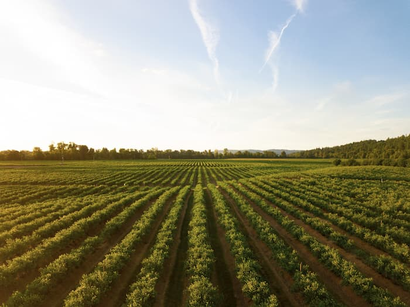
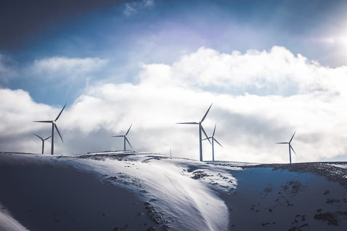
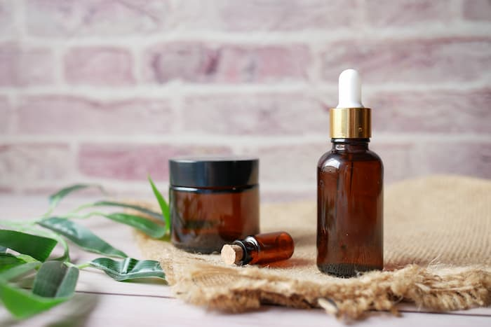

Categories

-

agriculture
Agricultural ecology is the study of agricultural ecosystems and their components as they function within themselves and in the context of the landscapes that contain them. Ecological agriculture improves pollination, which in turn improves crop yields. Ecological farming takes advantage of the natural ecosystem services, such as water filtration, pollination, oxygen production, and disease and pest control.
-

air
Clean air is vital for everyone. Control to emission permits, air purification, air pollution meters, car pollution, industrial emissions, and other pollutants so communities have healthy air to breathe.
-
consulting
Environmental consultants provide expert assessment and advisory services for their clients on matters pertaining to the management of environmental issues.
-

cosmetics
Ecological and organic cosmetics are the same thing. This term includes cosmetics that do not contain ingredients derived from animals, or animal by products or by an intermediate process involving animals.